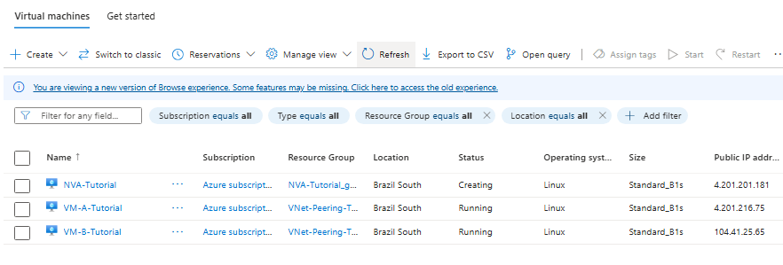
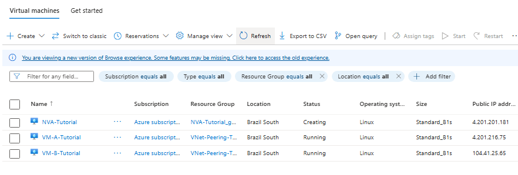

Introduction
Welcome! This tutorial will guide you through setting up VNet Peering between two Azure Virtual Networks, deploying test Virtual Machines, and optionally configuring User Defined Routes (UDRs) to direct traffic through a Network Virtual Appliance (NVA). By the end, you'll have a practical understanding of these core Azure networking concepts.
Prerequisites
- An active Azure Subscription (a free trial is sufficient).
- Access to the Azure Portal.
Architecture Overview
We will build the following:
- VNet-A-Tutorial: 10.0.0.0/16
- Subnet-A1-Tutorial: 10.0.1.0/24 (for VM-A)
- (Optional) NVA-Subnet-Tutorial: 10.0.2.0/24 (for NVA)
- VNet-B-Tutorial: 10.1.0.0/16
- Subnet-B1-Tutorial: 10.1.1.0/24 (for VM-B)
- VM-A-Tutorial: Test VM in Subnet-A1-Tutorial.
- VM-B-Tutorial: Test VM in Subnet-B1-Tutorial.
- (Optional) NVA-Tutorial: A simple Linux VM acting as an NVA.
- VNet Peering: Connecting VNet-A-Tutorial and VNet-B-Tutorial.
- (Optional) Route Table & UDR: To route traffic from Subnet-B1-Tutorial through NVA-Tutorial.

1. Preparing Your Azure Environment
1.1. Sign in to the Azure Portal
- Go to https://portal.azure.com and sign in.

1.2. Create a Resource Group
- Search for Resource groups and click + Create.
- Fill in the details and select a region (e.g., Brazil South).


2. Creating Virtual Networks (VNets) and Subnets
2.1. Create VNet-A-Tutorial
- Search for Virtual networks and click + Create.
- Fill in the basics and IP address space (10.0.0.0/16).
- Add subnets: Subnet-A1-Tutorial (10.0.1.0/24) and optionally NVA-Subnet-Tutorial (10.0.2.0/24).


2.2. Create VNet-B-Tutorial
- Repeat the process for VNet-B-Tutorial (10.1.0.0/16) and Subnet-B1-Tutorial (10.1.1.0/24).


3. Deploying Test Virtual Machines (VMs)
3.1. Deploy VM-A-Tutorial in VNet-A-Tutorial
- Search for Virtual machines and click + Create.
- Fill in the basics and select VNet-A-Tutorial and Subnet-A1-Tutorial.


3.2. Deploy VM-B-Tutorial
- Repeat the process for VM-B-Tutorial in VNet-B-Tutorial and Subnet-B1-Tutorial.

3.3. Allow ICMP (Ping) in NSGs
- Add inbound ICMP rules to both VMs' NSGs for ping tests.


4. Configuring VNet Peering
4.1. Create Peering from VNet-A-Tutorial to VNet-B-Tutorial
- Go to VNet-A-Tutorial > Peerings > + Add. Fill in the details and select VNet-B-Tutorial as the remote VNet.

4.2. Verify Peering Status


5. Testing Basic Connectivity
5.1. Get VM Private IP Addresses


5.2. Connect to VMs and Test Ping


6. (Optional) Routing Traffic via a Network Virtual Appliance (NVA)
6.1. Deploy a Simple NVA (Linux VM)

 



6.2. Create a Route Table


6.3. Add a User Defined Route (UDR)

6.4. Associate the Route Table with Subnet-B1-Tutorial

6.5. Test Traffic Flow via NVA

You should see the NVA's private IP as a hop in the traceroute output.
7. Clean Up Resources
- Go to Resource groups, select your resource group, and click Delete resource group to remove all resources.
Conclusion
Congratulations! You've successfully configured VNet Peering, deployed VMs, and optionally routed traffic through an NVA in Azure. This project covers fundamental Azure networking skills.